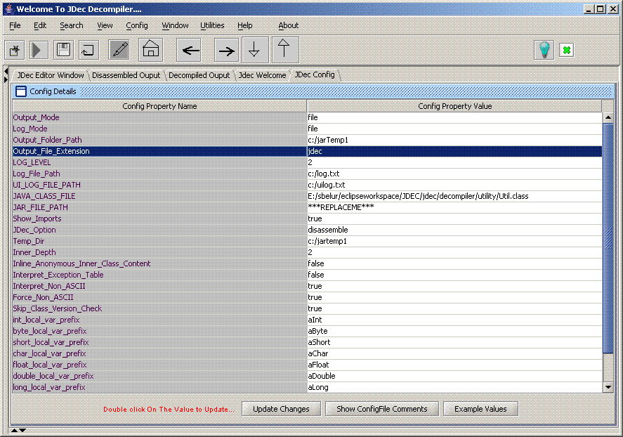

Topic: Jdec
Configuration
Last Updated by: Swaroop Belur Nov 2006,07
Main Page
Description:
Additions for
release 1.2
1. Interpret_Non_ASCII (Default is true)
2. Force_Non_ACII (Default is true)
Jdec configuration is meant to provide the end user to configure jdec
BEFORE jdec can be used
Some of these properties are simple like output directory,log level. But
some can be useful.
Some parameters to note are:
1.Interpret_Non_ASCII -> Instructs jdec engine to either
process non-ascii characters or not.
2.Force_Non_ACII -> If true instructs
jdec engine to process all characters similarly (for a string) when any
character is non-ascii.
3.Inner_Depth
-> Instruts jdec engine to process inner classes to a depth indicated
by this number
[For example if A contains B ,B contains C and Inner_Depth is set to 1
then C will not be decompiled]
Updating
1. Click on Config menu->Jdec(Decompiler)Config to update.
2. Double click on any value cell to update.
3. Appropriate va;idations throw up a message in case of invalid value.
4. Replacing all ***Replace me*** values is best as it is generally one
time shot.
5. There is no need to update the class file or jar file as you can
select a class/jar file.
NOTE:
1. jdec config options was initially designed keeping the run image
button in mind.
i.e just set the class file path and other necesary option
like output folder.
2. However later on some options had to be introduced and need was
felt to
integrate jdec config with all routes[file->open,tree
click and otheres] to decompile
a class file.
Picture:

|